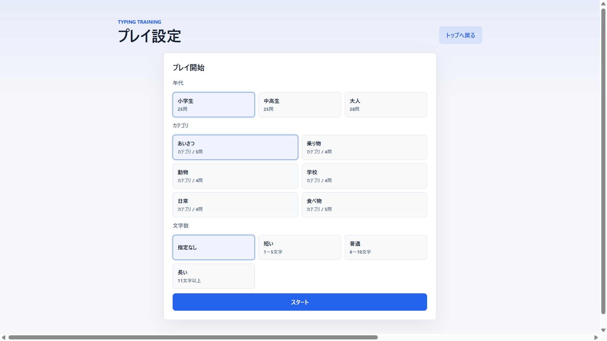
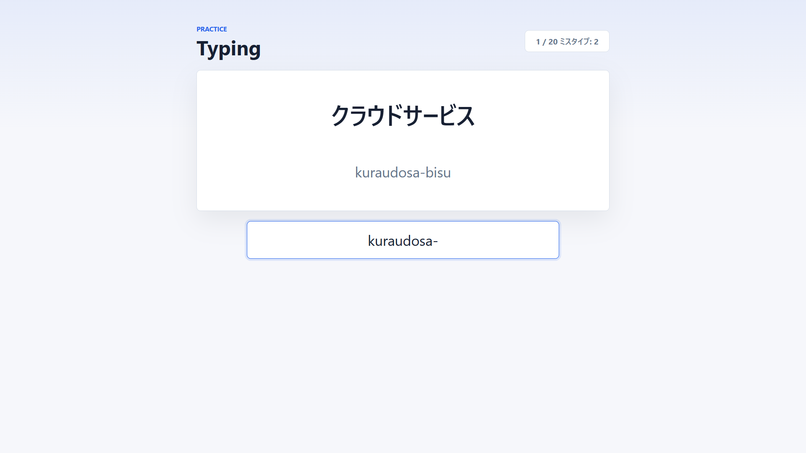
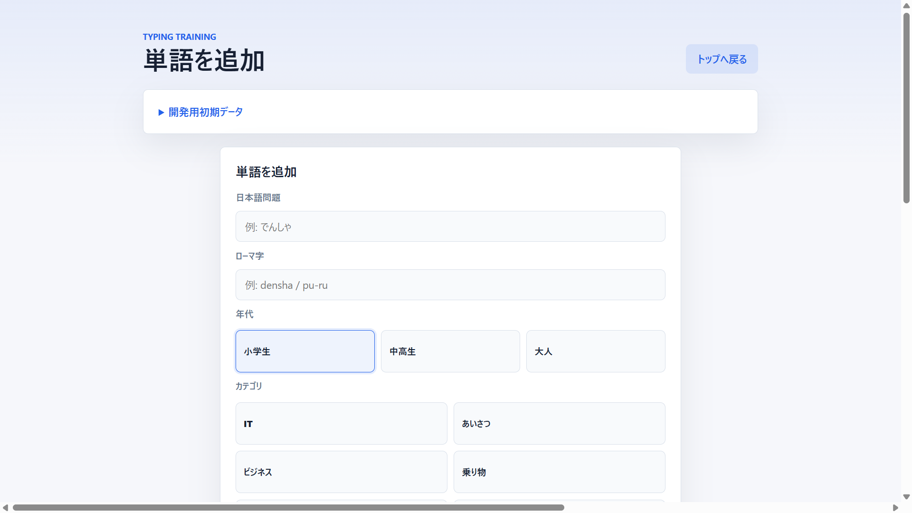
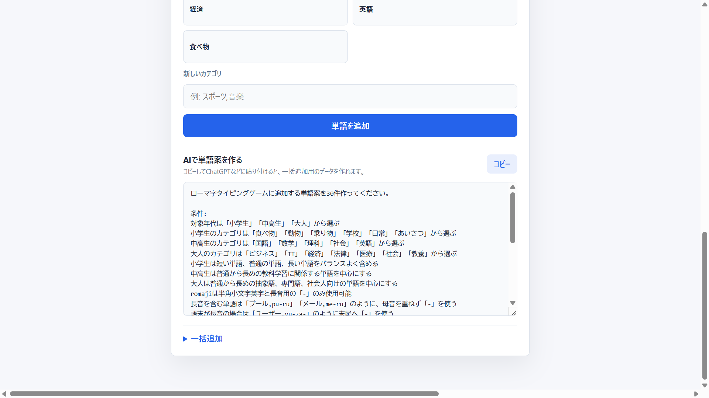
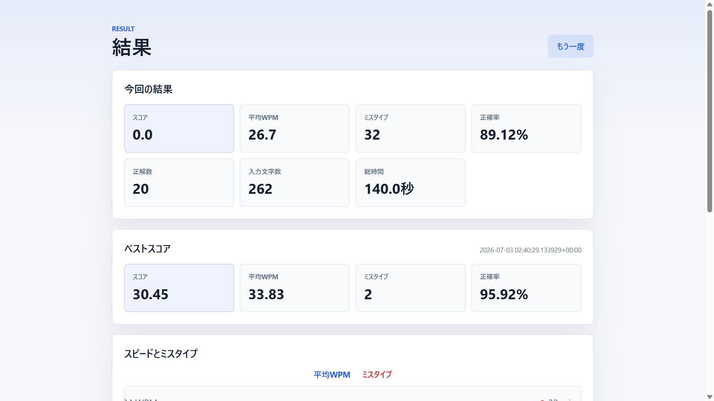
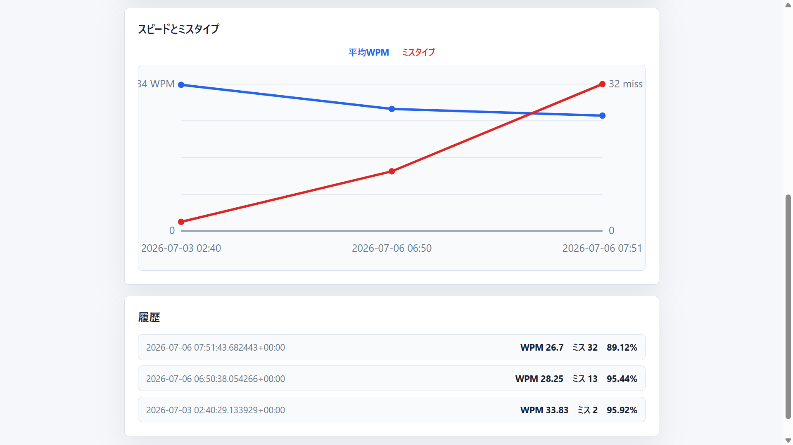
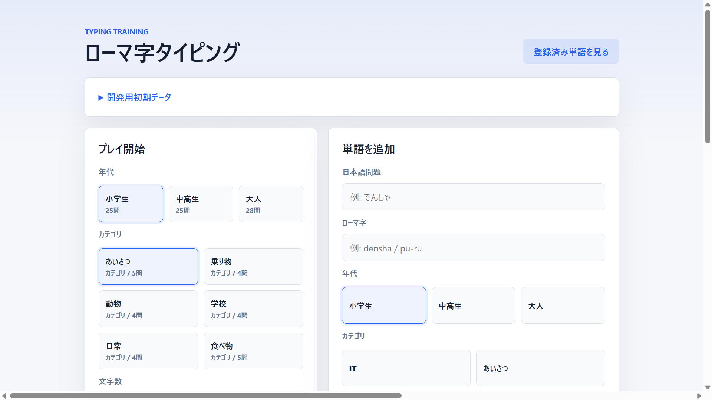

年代やカテゴリを選んで練習できる、ローマ字タイピングアプリを制作した。 一般的なタイピング練習では記録が残らず、成長を実感しにくいことがある。 そこで、練習結果をデータベースに保存し、ベストスコアや過去の記録を確認できるようにした。
また、登録された問題だけを繰り返すのではなく、利用者が新しい単語を追加できる機能も実装した。 対象となる年代は「小学生」「中高生」「大人」の3種類で、学習者に合った問題を選択できる。
年代、カテゴリ、文字数を選択すると、条件に合う問題がデータベースから出題される。 表示された日本語を見ながらローマ字を入力し、入力内容が正しいかをその場で判定する。


トップ画面から日本語、ローマ字、年代、カテゴリを指定して新しい問題を追加できる。 1件ずつの登録だけでなく、複数の単語をまとめて追加することも可能にした。 登録済みの単語は、年代・カテゴリ・キーワードで絞り込んで確認できる。


練習終了後に、スコア、平均WPM、ミスタイプ数、正確率、正解数、入力文字数、総時間を表示する。 結果はデータベースへ保存され、ベストスコアとの比較や過去10回分の推移をグラフで確認できる。


Webアプリの処理にはPythonのFlaskを使用し、画面はHTML・CSS・JavaScriptで制作した。 問題や練習結果の保存にはPostgreSQLを使用している。
利用者がトップ画面で条件を選ぶと、Flaskが条件に合う問題をデータベースから取得する。 タイピング中はJavaScriptが入力を判定し、終了後に結果をFlaskへ送信する。 受け取った結果はデータベースに保存され、結果画面や履歴グラフに反映される。
データベースには、利用者、タイピング問題、カテゴリ、問題とカテゴリの関係、 練習結果、各問題への回答を保存するテーブルを用意した。 問題とカテゴリを別々に管理することで、1つの問題に複数のカテゴリを設定できるようにした。
制作中はChatGPTを活用し、Flaskの処理、データベースとの接続、エラーの原因などを確認しながら開発した。 アプリ内には、練習問題の案をAIに作ってもらうためのプロンプト例も用意した。 生成された単語データを一括追加欄へ貼り付けることで、年代やカテゴリに合った問題を増やせる。
制作途中は、プレイ設定と単語追加を1つの画面に並べていた。 しかし、情報量が多く画面も横に広がってしまったため、最初に目的を選ぶトップ画面を作り、 プレイ設定と単語追加をそれぞれ別の画面へ分けた。

特に苦労したのは、年代・カテゴリ・文字数という複数の条件を組み合わせて問題を取得する処理である。 問題とカテゴリの関係をデータベース上で管理し、選択された条件に合う問題だけを出題できるように調整した。
また、入力速度だけでなく、ミスタイプや正確率も含めて結果を計算し、保存した履歴をグラフとして表示する流れを作ることにも苦労した。
今回の制作を通して、画面を作るだけでなく、利用者の操作、サーバー側の処理、データベースへの保存をつなげて 1つのWebアプリとして動かす方法を学んだ。 データを保存することで、タイピングを一度きりの練習ではなく、成長を振り返るためのツールにできた。